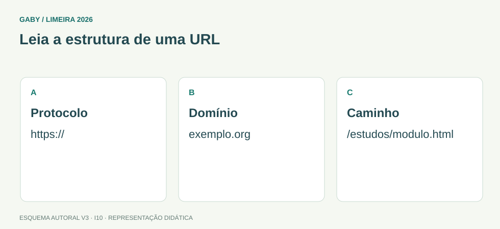

Objetivos do módulo
- Entender campos de e-mail e anexos.
- Interpretar estrutura básica de URL e link.
- Aplicar boas práticas de busca e segurança.
- Decompor uma URL em esquema, domínio, caminho, consulta e fragmento, e resolver um link relativo.
- Usar os operadores da Pesquisa Google: aspas, sinal de menos,
site:,filetype:e filtro de datas. - Diferenciar Responder, Responder a todos e Encaminhar, e os protocolos SMTP, POP3 e IMAP.
- Explicar cache, cookies, histórico, favoritos, downloads, extensões, permissões de site e navegação privativa.
- Distinguir Internet, intranet e extranet e reconhecer a função de DNS, FTP, HTTP e HTTPS.
Leia a estrutura de uma URL

Descrição em texto do esquema
- Protocolo: https://
- Domínio: exemplo.org
- Caminho: /estudos/modulo.html
Oficina visual · aplique o esquema
Em https://escola.exemplo.org/matricula, identifique protocolo, domínio completo e caminho.
Atividade autoral complementar da V3. Registre sua resposta; a resolução está no arquivo de gabarito e revisão.
Mapa do conteúdo
- 1. E-mail: Para, Cc e Cco
- 2. Anexos
- 3. URL e link
- 4. Busca
- 5. Segurança e impressão
- 6. Protocolos de e-mail e Caixa de saída
- 7. Navegadores: cache, cookies, histórico e navegação privativa
- 8. Recursos do navegador: localizar, downloads, favoritos, extensões e permissões
- 9. Internet, intranet, extranet e protocolos de rede
1. E-mail: Para, Cc e Cco
Referência desta aula: navegadores atuais para Windows 11 (Microsoft Edge, Google Chrome e Mozilla Firefox) e clientes de e-mail (Outlook, do Microsoft 365, e Mozilla Thunderbird), em português do Brasil. Operadores de busca seguem a Pesquisa Google.
O correio eletrônico (e-mail) é um serviço de comunicação pela rede: permite enviar e receber mensagens entre endereços no formato usuario@dominio. A parte depois do @ é o domínio do provedor ou da instituição.
Para indica destinatários principais; Cc envia cópia visível; Cco envia cópia oculta aos demais destinatários. Responder a todos inclui participantes conforme configuração e deve ser usado com cuidado.
Campos de destinatário
| Campo | Significado | Quem vê o endereço |
|---|---|---|
| Para | Destinatários principais, de quem se espera ação ou resposta. | Todos os destinatários. |
| Cc (com cópia) | Quem deve tomar conhecimento da mensagem. | Todos os destinatários. |
| Cco (com cópia oculta) | Quem recebe uma cópia sem aparecer para os demais. | Só o remetente. Quem está em Para e Cc não vê os nomes em Cco. |
O Assunto resume o conteúdo e o corpo traz o texto. Use Cco ao escrever para muitas pessoas que não se conhecem: assim um destinatário não recebe o endereço dos outros.
Responder, Responder a todos e Encaminhar
| Comando (Outlook) | Para quem vai | Anexos da mensagem original |
|---|---|---|
| Responder | Só para o remetente original. | Não são incluídos. |
| Responder a Todos | Para o remetente original e para todos os que estão em Para e Cc. | Não são incluídos. |
| Encaminhar | Para novos destinatários, que você digita. | São incluídos automaticamente. |
Antes de enviar, você ainda pode acrescentar ou retirar nomes em Para, Cc e Cco. Quem recebeu a mensagem em Cco não entra na resposta dos outros, porque seu endereço não aparece para eles. Se a própria pessoa em Cco usar Responder a Todos, a resposta vai ao remetente e a quem está em Para e Cc, e todos ficam sabendo que ela também recebeu.
Outlook
O Outlook é o programa da Microsoft que reúne em um só lugar e-mails, calendário (agenda), contatos e tarefas. Não é editor de texto nem navegador. Há versões para computador (Windows e Mac), para celular (iOS e Android) e acesso pela Web. O Thunderbird, da Mozilla, é outro cliente de e-mail para computador.
2. Anexos
Anexo é arquivo enviado junto à mensagem. Tamanho pode ser limitado pelo serviço. Links de compartilhamento em nuvem não são tecnicamente o mesmo que anexar os bytes do arquivo, embora cumpram finalidade semelhante.
- O que pode ser anexado: qualquer arquivo digital, como documento, planilha, apresentação, imagem, vídeo ou PDF.
- O que o anexo não é: não é o endereço do remetente, nem o assunto, nem um antivírus, nem o servidor de e-mail.
- Limite de tamanho: quem define é o serviço de e-mail. Se o arquivo passar do limite, o servidor recusa a mensagem; a saída é enviar um link para o arquivo guardado na nuvem.
- Anexo e resposta: ao responder, o anexo recebido não volta; ao encaminhar, ele segue junto (seção 1).
- Cuidado: anexo inesperado pode conter código malicioso. Confirme o remetente e o contexto antes de abrir.
3. URL e link
URL identifica um recurso. Ex.: https://exemplo.com/pasta/pagina. “https” é esquema/protocolo; “exemplo.com” é domínio/host; o restante é caminho. Link é elemento clicável que aponta para um endereço/recurso.
Partes de uma URL
Leia a URL da esquerda para a direita. Cada parte começa com um sinal próprio. Exemplo completo:
https://portal.exemplo.gov.br/servicos/matricula/consulta.html?serie=5&turno=manha#documentos
| Parte | No exemplo | Como reconhecer e para que serve |
|---|---|---|
| Esquema (protocolo) | https | Vem antes de ://. Diz qual protocolo o navegador usa para pedir o recurso. |
| Domínio (host) | portal.exemplo.gov.br | Vem depois de :// e vai até a primeira barra. Indica o servidor procurado. |
| Caminho | /servicos/matricula/consulta.html | Começa na primeira barra depois do domínio. Indica a pasta e o recurso dentro do servidor. |
| Consulta (parâmetros) | serie=5&turno=manha | Começa depois do ponto de interrogação ?. São pares nome=valor separados por &. Aqui há dois parâmetros: serie e turno. |
| Fragmento (âncora) | #documentos | Começa no sinal # e vai até o fim. Aponta para uma parte dentro do próprio documento. O navegador não envia o fragmento ao servidor. |
A porta pode aparecer depois do domínio, separada por dois-pontos (exemplo.org:8080). Em geral é omitida, porque o navegador usa a porta padrão: 80 para HTTP e 443 para HTTPS.
A ordem é fixa: esquema, domínio, caminho, consulta, fragmento. Nem toda URL tem consulta ou fragmento.
Codificação por percentual
Alguns caracteres não podem aparecer diretamente em uma URL. Eles são trocados por % seguido de dois dígitos hexadecimais. O caso mais cobrado é o espaço, que vira %20. Exemplo: em busca?termo=merenda%20escolar, o valor do parâmetro termo é “merenda escolar”. A codificação só representa caracteres: não é senha nem prova de identidade.
Endereço absoluto e link relativo
O endereço absoluto traz tudo: esquema, domínio e caminho. Funciona em qualquer lugar. O link relativo omite partes; o navegador completa o que falta com o endereço da página em que o link está (o endereço base).
Página base do exemplo: https://portal.exemplo.gov.br/servicos/matricula/consulta.html. A pasta atual é /servicos/matricula/.
| Link escrito na página | Regra | Endereço final |
|---|---|---|
vagas.html | Só o nome: mesma pasta da página base. | https://portal.exemplo.gov.br/servicos/matricula/vagas.html |
../contato.html | ../ sobe um nível de pasta. | https://portal.exemplo.gov.br/servicos/contato.html |
/mapa.html | Barra inicial: parte da raiz do mesmo domínio. | https://portal.exemplo.gov.br/mapa.html |
#documentos | Só fragmento: mesma página, outra parte dela. | https://portal.exemplo.gov.br/servicos/matricula/consulta.html#documentos |
https://outro.exemplo.org/a.html | Absoluto: não depende da base. | https://outro.exemplo.org/a.html |
Ao resolver ../, retire o nome do arquivo da base, suba uma pasta e só então acrescente o destino. O nome do arquivo da base nunca vira pasta, e o link relativo nunca troca o domínio.
4. Busca
Consultas mais específicas reduzem ruído. Aspas em muitos buscadores podem pesquisar expressão exata; operadores e filtros variam. Sempre avalie fonte, data e autenticidade.
Operadores da Pesquisa Google
| Operador | O que faz | Exemplo |
|---|---|---|
Aspas " " | Pede a correspondência exata da palavra ou da frase, na ordem digitada. | "transporte escolar gratuito" |
Sinal de menos - | Exclui dos resultados as páginas com a palavra. O sinal fica colado à palavra excluída. | mercúrio -planeta |
site: | Restringe a busca a um site ou domínio. | calendário escolar site:educacao.exemplo.sp.gov.br |
filetype: | Restringe a um tipo de arquivo. | regimento interno filetype:pdf |
before: e after: | Restringem por data: antes de, depois de. Aceitam ano ou data completa e podem ser combinados para formar um período. | censo escolar after:2024 before:2026 |
- Sem espaço depois dos dois-pontos.
site:exemplo.orgfunciona;site: exemplo.orgnão. - Cada operador tem um papel.
site:espera um domínio, não um formato;filetype:espera um formato, não uma palavra; o sinal de menos exclui, não restringe a um domínio; aspas exigem a expressão, não a excluem. - Operadores podem ser combinados.
"plano municipal de educação" site:exemplo.sp.gov.br filetype:pdfbusca a frase exata, só naquele domínio, só em PDF.
Filtro por intervalo de datas
Para achar o que foi publicado em certo período, use after: e before: juntos ou o filtro de data das ferramentas de pesquisa, na página de resultados. O filtro só seleciona resultados: abra o documento e confira a data real. Formato, domínio e palavras excluídas não definem período.
Buscar na Web não é localizar na página
O buscador procura em páginas de toda a Web. Para achar uma palavra dentro da página que já está aberta, o comando é Ctrl+F (seção 8).
5. Segurança e impressão
Desconfie de anexos inesperados, domínios parecidos e pedidos urgentes de senha. HTTPS protege a conexão, mas não garante que o site seja legítimo. Navegadores permitem imprimir/salvar página em PDF, conforme sistema.
HTTP e HTTPS
HTTP é o protocolo que transmite páginas da Web. HTTPS é a versão criptografada do HTTP: usa o protocolo TLS para cifrar a comunicação entre o navegador e o servidor. Quem intercepta a conexão não lê senhas nem dados de formulário. O HTTPS protege o trajeto dos dados; não avalia a honestidade de quem está do outro lado.
Spam e phishing
| Termo | O que é |
|---|---|
| Spam | E-mail não solicitado, geralmente enviado em massa, para um grande número de pessoas. O conteúdo pode ser propaganda, boato ou golpe: não precisa ser comercial. |
| Phishing | Golpe em que mensagem ou site imita uma instituição real para obter senhas, dados pessoais ou dados de cartão. |
| Engenharia social | Método não técnico de ataque, baseado em enganar a pessoa (explora confiança, pressa ou medo) para que ela mesma entregue a informação. |
Não confunda com outras ameaças. Spam é definido pelo envio em massa sem autorização. Quebrar senhas e invadir sistemas alheios é ação de invasor (cracker). Programa desatualizado é uma vulnerabilidade. Erro de usuário leigo ou descontente é falha humana interna.
Contra phishing: confira o domínio real do link antes de clicar, desconfie de urgência e nunca informe senha em resposta a mensagem recebida.
6. Protocolos de e-mail e Caixa de saída
O programa de e-mail usa um protocolo para enviar e outro para receber. Por isso a conta tem duas configurações de servidor separadas.
| Protocolo | Função | Como se comporta |
|---|---|---|
| SMTP (Simple Mail Transfer Protocol) | Envio. É o servidor de saída. | Leva a mensagem do programa do usuário ao servidor e de um servidor a outro. Não serve para ler a caixa de entrada. |
| POP3 (Post Office Protocol, versão 3) | Recebimento por download. | Conecta, baixa as mensagens da caixa de entrada para o dispositivo e desconecta. Não sincroniza pastas. A cópia no servidor pode ser apagada ou mantida, conforme a configuração da conta. |
| IMAP (Internet Message Access Protocol) | Recebimento com sincronização. | As mensagens ficam no servidor e o programa sincroniza mensagens, estado (lida, apagada) e pastas. Todos os dispositivos da conta mostram o mesmo conteúdo. |
HTTP (páginas da Web) e FTP (transferência de arquivos) não são protocolos de e-mail. POP3 e IMAP não enviam mensagens: o envio é sempre SMTP.
O que isso muda na prática (Thunderbird)
- Recebe, mas não envia. O problema está na saída. Confira o Servidor de envio (SMTP) nas Configurações da conta: nome do servidor, porta, segurança da conexão e autenticação exigidas pelo provedor. Mexer no servidor IMAP não resolve.
- Um SMTP para várias contas. No Thunderbird, os servidores SMTP são cadastrados à parte das contas de recebimento. Duas contas podem usar o mesmo servidor de saída, se o provedor permitir. A autenticação continua sendo exigida.
- POP e cópia no servidor. Não é verdade que o POP sempre apaga do servidor. O Thunderbird pode manter as mensagens no servidor depois de baixá-las; o prazo fica nas configurações da conta. Confira essa opção antes de concluir o que aconteceu com a mensagem.
- IMAP e exclusão. Apagar uma mensagem em um dispositivo apaga também no servidor e, na sincronização, nos outros dispositivos. Sincronizar não é fazer cópia de segurança.
- IMAP, cabeçalho e corpo. O cabeçalho traz remetente, destinatários e assunto; o corpo é o texto. O Thunderbird pode baixar só os cabeçalhos e buscar o corpo quando você clica na mensagem. Sem conexão, uma mensagem cujo corpo não foi baixado não abre. Pela mesma razão, a pesquisa no texto do corpo só encontra mensagens já baixadas (sincronizadas): não achar não prova que o texto não existe no servidor.
Caixa de saída e Enviar depois
A Caixa de saída guarda as mensagens que ainda não foram enviadas. É uma fila de espera. No Thunderbird, o comando Arquivo > Enviar depois coloca a mensagem nessa pasta até você decidir enviar (a ajuda do Thunderbird chama a pasta de Saída e a mostra entre as pastas locais). O mesmo acontece quando o programa está sem conexão, em modo off-line: a mensagem fica pendente até haver conexão e envio.
| Pasta | O que contém | O que prova |
|---|---|---|
| Rascunhos | Mensagens ainda em redação. | Nada foi enviado. |
| Caixa de saída | Mensagens prontas, aguardando o envio. | Nada foi transmitido ainda. O envio continua dependendo de conexão e do servidor SMTP. |
| Enviados | Cópia das mensagens já entregues ao servidor de saída. | Que o envio foi feito. Não prova que o destinatário recebeu nem que leu. |
7. Navegadores: cache, cookies, histórico e navegação privativa
Navegador (browser) é o programa que abre páginas da Web. Os principais são Microsoft Edge, Google Chrome e Mozilla Firefox. Não são navegadores: o buscador (Google é um site de pesquisa), a Adobe (empresa de programas), a impressora e o pop-up (janela que um site abre sobre a página).
O que o navegador guarda
| Dado | O que é | Para que serve |
|---|---|---|
| Histórico | Lista das páginas visitadas. | Voltar a um endereço e sugerir endereços na barra. Atalho: Ctrl+H. |
| Cache | Cópia local e temporária de partes dos sites visitados, como imagens e scripts. | Não baixar tudo de novo a cada visita; a página abre mais rápido. |
| Cookies | Pequenos dados que o site grava no computador. | Guardar preferências do site e o estado de acesso (sessão): é o que mantém você conectado à conta. |
Cache: página antiga ou misturada
O cache não substitui o servidor nem guarda senhas, e pode ser atualizado ou limpo. Se um site mudou e a página aparece desatualizada ou com partes antigas e novas misturadas, arquivos velhos no cache são uma causa provável. Providência de diagnóstico: limpar o cache (ou os dados daquele site) e recarregar. Recarregar ignorando o cache: Ctrl+F5 no Firefox; Shift+F5 ou Ctrl+Shift+R no Edge. Limpar o cache não apaga documentos do computador.
Cookies: limpar e ter de entrar de novo
Depois de limpar os cookies de um site, é normal precisar fazer login outra vez: o dado que guardava a sessão foi removido. A conta continua existindo no servidor.
Não é preciso apagar tudo. No Firefox:
- Um site específico: menu > Configurações > Privacidade e segurança > Dados de navegação > Limpar dados de sites específicos. Pesquise o site, selecione-o, clique em Remover selecionados e em Salvar alterações. Os cookies dos outros sites ficam.
- Tudo: na mesma seção, Limpar dados de navegação; escolha o período e os itens (cookies, cache). Atalho para abrir a limpeza no Firefox e no Edge: Ctrl+Shift+Delete.
Navegação privativa
| Navegador | Nome do comando | Atalho |
|---|---|---|
| Firefox | Nova janela privativa | Ctrl+Shift+P |
| Edge | Nova janela InPrivate | Ctrl+Shift+N |
| Chrome | Nova janela anônima | Ctrl+Shift+N |
O que ela faz: não guarda no dispositivo o histórico, os cookies, os dados de sites, o cache nem o que foi digitado em formulários. No Firefox, os cookies da sessão privativa ficam separados dos cookies das janelas comuns e são descartados quando a última janela privativa é fechada. Você também é desconectado dos sites em que entrou nessa sessão.
O que permanece: os arquivos baixados continuam no computador e os favoritos criados continuam na lista. Todo o resto do dispositivo fica como estava: a janela privativa não apaga documentos, não limpa dados de outras pessoas e não remove programas.
O que ela não faz:
- não torna a pessoa anônima na Internet;
- não oculta o endereço IP nem a localização;
- não impede que os sites visitados, o provedor de acesso, a escola ou o empregador (dono da rede ou do computador) vejam a atividade;
- não protege contra programas espiões instalados no computador, como os que registram o que é digitado;
- não dispensa login: ao entrar em uma conta, o site sabe quem você é.
Em resumo: a navegação privativa protege a privacidade diante de outras pessoas que usam o mesmo dispositivo. Não protege diante da rede.
8. Recursos do navegador: localizar, downloads, favoritos, extensões e permissões
Os nomes de menu desta seção são os do Firefox para Windows, que é o navegador mais citado nas questões. Edge e Chrome têm recursos equivalentes.
Localizar na página: Ctrl+F
Ctrl+F abre a barra de procura (no menu do Firefox, Procurar na página…; no Edge, Localizar na página). Ela procura o texto digitado somente na página aberta, destaca as ocorrências e mostra quantas são. F3 vai para a próxima. É diferente de digitar no buscador, que pesquisa em outras páginas da Web.
Downloads
O botão Downloads da barra de ferramentas abre o painel de Downloads, com os arquivos mais recentes, o tamanho e o status de cada um. Ctrl+J abre os downloads; Mostrar todos os downloads abre a lista completa, na Biblioteca. Clicar em um link só inicia o pedido: para saber se o arquivo veio inteiro, confira o status do item (em andamento, pausado, com falha ou concluído). Download que falhou pode ser repetido.
| Comando do item (botão direito) | Efeito |
|---|---|
| Remover do histórico | Tira o registro da lista de downloads. O arquivo continua no disco. |
| Excluir arquivo baixado | Apaga o arquivo do disco. |
| Limpar downloads (na Biblioteca) | Limpa toda a lista. Os arquivos não são excluídos. |
Ação por tipo de arquivo. Em Configurações > Downloads > Arquivos e aplicativos, cada tipo de conteúdo (PDF, por exemplo) tem uma ação própria: Abrir no Firefox, Salvar arquivo, usar um aplicativo ou Sempre perguntar. Com Sempre perguntar, o Firefox pergunta o que fazer a cada download daquele tipo; os outros tipos mantêm as ações deles.
Abrir com um aplicativo também baixa. Para um programa do computador abrir o arquivo, o conteúdo precisa ser transferido: o Firefox salva o arquivo na pasta de downloads e então o abre no aplicativo.
Favoritos
Favorito é uma referência ao endereço de uma página, guardada para você voltar a ela (estrela na barra de endereços ou Ctrl+D). Não é cópia da página: sem Internet, o favorito não garante acesso ao conteúdo, nem baixa vídeos ou arquivos ligados a ela.
- Levar favoritos para outro navegador por arquivo: menu > Favoritos > Gerenciar favoritos > Importar e backup > Exportar favoritos para HTML…. O arquivo HTML gerado pode ser importado em outro navegador ou em outro computador. Já o backup do Firefox (formato JSON) serve para restaurar no próprio Firefox.
- Importar dados de outro navegador: no mesmo menu, Importar dados de outro navegador… abre um assistente. Nele você escolhe o navegador de origem, o perfil e quais dados trazer (favoritos, histórico, senhas salvas e outros). Importar favoritos não obriga a importar o resto.
Extensões
Extensões são complementos instalados no navegador para acrescentar funções, como bloquear anúncios. Como alteram ou bloqueiam partes das páginas, podem fazer um site funcionar mal. Ficam em menu > Extensões e temas > Extensões, onde cada uma tem um seletor para ativar e desativar.
Se o site falha só no navegador que tem extensões, teste por eliminação: mude uma extensão por vez (desativando ou reativando), recarregue a página e observe. Quando o defeito some ou volta, você achou a extensão responsável; desative-a ou remova-a. O Modo de solução de problemas do Firefox faz o teste inicial de uma vez: reinicia com todas as extensões desativadas temporariamente.
Permissões de site e notificações
Cada site só usa certos recursos se você permitir: enviar notificações, usar câmera ou microfone, acessar a localização, abrir janelas. As permissões valem por site e podem ser revistas a qualquer momento.
- Do site aberto: janela Informações da página (Ctrl+I), aba Permissões. Desmarque Usar o padrão e escolha Permitir, Bloquear ou Sempre perguntar. Essa aba trata de permissões técnicas; não atesta que o conteúdo do site é verdadeiro.
- De todos os sites: Configurações > Permissões e dados > Permissões > Notificações. Remover site revoga a permissão, e o site poderá pedir de novo; Bloquear revoga e impede novos pedidos.
Notificações Web Push. Um site autorizado pode enviar notificações mesmo sem estar carregado em uma aba, enquanto o navegador estiver aberto. Fechar a aba não cancela a permissão. Para parar as notificações, revogue ou bloqueie a permissão do site. Apagar o favorito ou mudar de aba não tem efeito sobre isso.
Site com defeito: por onde começar
- Abra outro site. Se nenhum abre, o problema é a conexão.
- Abra o mesmo site em outro navegador. Se lá funciona, a causa está no primeiro navegador (cache, cookies, extensões, configuração). Se falha em todos, a causa provável é o site ou a rede.
- No navegador com defeito, limpe cache e cookies do site e recarregue; depois teste as extensões.
O teste indica onde procurar; sozinho não prova toda a causa.
9. Internet, intranet, extranet e protocolos de rede
Três alcances de rede
| Rede | O que é | Quem acessa |
|---|---|---|
| Internet | Rede mundial e pública que interliga redes. | Qualquer pessoa conectada. |
| Intranet | Rede privada e interna de uma organização, feita com as mesmas tecnologias da Internet (páginas, navegador, e-mail). | Só usuários autorizados da própria organização, como os servidores de uma prefeitura. |
| Extranet | Parte dos sistemas da organização liberada, de forma restrita e controlada, para fora dela. | Usuários externos determinados: fornecedores, parceiros, clientes. |
Palavra-chave: “interna” e “só da organização” indicam intranet; “usuários externos” com acesso “restrito” indica extranet. Wi-Fi é uma tecnologia de acesso sem fio, não um desses três alcances.
Protocolos: cada um com sua função
Protocolo é um conjunto de regras que os equipamentos seguem para se comunicar.
| Protocolo | Função |
|---|---|
| DNS (Domain Name System) | Traduz nomes de domínio em endereços IP. Você digita portal.exemplo.gov.br e o DNS informa o número do servidor. |
| FTP (File Transfer Protocol) | Transferência de arquivos entre dois computadores (cliente e servidor), inclusive pela Internet. |
| HTTP / HTTPS | Transmissão de páginas da Web; o HTTPS com criptografia (seção 5). |
| SMTP, POP3, IMAP | E-mail: SMTP envia; POP3 e IMAP recebem (seção 6). |
| DHCP | Entrega automaticamente ao computador as configurações de rede, como o endereço IP que ele vai usar. |
| Telnet | Acesso remoto em modo terminal: um computador opera como terminal de outro. |
| UDP | Protocolo de transporte simples, usado por outras aplicações para enviar mensagens. |
Não troque as funções. Traduzir nome é DNS, não DHCP (que distribui configuração). Transferir arquivo é FTP, não Telnet (terminal remoto). O FTP comum não criptografa: “acesso mais seguro” não é a função dele.
Exemplos resolvidos passo a passo
Exemplo 1
Situação: Você precisa mandar cópia sem revelar o endereço desse destinatário aos demais.
Exemplo 2
Situação: URL https://prefeitura.exemplo.gov.br/concursos. Qual é o esquema?
Exemplo 3
Situação: Site usa HTTPS. Isso prova que é oficial?
Exemplo 4
Situação: Identifique as partes de https://saude.exemplo.gov.br/agenda/vacinas.html?ubs=12&mes=11#horarios.
https (antes de ://). Domínio: saude.exemplo.gov.br. Caminho: /agenda/vacinas.html. Consulta: ubs=12&mes=11, depois do ?, com dois parâmetros (ubs vale 12; mes vale 11). Fragmento: #horarios, que leva a uma parte da página.Exemplo 5
Situação: A página https://escola.exemplo.org/alunos/turmas/lista.html tem os links notas.html e ../calendario.html. Para onde cada um aponta?
/alunos/turmas/. notas.html fica na mesma pasta: https://escola.exemplo.org/alunos/turmas/notas.html. ../ sobe para /alunos/: https://escola.exemplo.org/alunos/calendario.html. O domínio não muda e lista.html não vira pasta.Exemplo 6
Situação: Você quer achar, só no site camara.exemplo.sp.gov.br, arquivos PDF com a expressão exata lei orgânica, sem resultados que falem de emenda.
"lei orgânica" site:camara.exemplo.sp.gov.br filetype:pdf -emenda. Aspas fixam a expressão; site: (sem espaço) limita ao domínio; filetype: limita ao formato; o sinal de menos exclui a palavra.Exemplo 7
Situação: Uma secretária lê o e-mail da escola no computador e no celular e quer ver as mesmas pastas e mensagens nos dois. Qual protocolo de recebimento escolher? E qual protocolo envia as mensagens?
Exemplo 8
Situação: Em um computador de uso comum, alguém consulta a própria conta em uma janela privativa, baixa um comprovante e fecha a janela. O que fica no computador? A empresa dona da rede pode ter visto o acesso?
Pegadinhas e erros frequentes
- Usar Cc quando deveria preservar endereços com Cco.
- Achar que link e anexo são a mesma coisa.
- Confiar em site só porque tem cadeado/HTTPS.
- Abrir anexo inesperado sem validar remetente.
- Escrever
site: dominiocom espaço, ou usarsite:para formato efiletype:para palavra. - Achar que o sinal de menos restringe a um domínio: ele exclui a palavra.
- Tratar
../arquivo.htmlcomo se ficasse na mesma pasta, ou o arquivo da página base como se fosse pasta. - Confundir consulta (depois de
?) com fragmento (depois de#); ler%20como senha, quando é espaço. - Achar que Responder leva os anexos: só Encaminhar leva.
- Dizer que IMAP envia e-mail ou que POP sempre apaga do servidor.
- Tomar a Caixa de saída como prova de entrega: ali a mensagem ainda aguarda envio.
- Achar que janela privativa dá anonimato, oculta o IP ou esconde a navegação do empregador.
- Achar que favorito guarda a página para ler sem Internet.
- Confundir Remover do histórico (some da lista) com Excluir arquivo baixado (some do disco).
- Achar que fechar a aba cancela notificações: é preciso revogar a permissão do site.
- Trocar intranet (interna) por extranet (externos autorizados), ou DNS (nomes) por DHCP (configuração).
Resumo de prova
- Cc é visível; Cco oculta destinatário.
- Anexo é arquivo ligado à mensagem.
- URL identifica recurso; link aponta para recurso.
- HTTPS não prova legitimidade do conteúdo.
- Busca exige avaliação da fonte.
- URL: esquema
://domínio/caminho?consulta#fragmento. - Consulta: pares nome=valor separados por
&;%20é espaço. - Absoluto tem esquema e domínio; relativo depende da base;
../sobe uma pasta. - Google: aspas = exato; sinal de menos = exclui;
site:= domínio;filetype:= formato;before:/after:= datas. Sem espaço após os dois-pontos. - Responder: só remetente. Responder a todos: remetente + Para + Cc. Encaminhar: novos destinatários, com anexos.
- SMTP envia; POP3 baixa; IMAP sincroniza com o servidor.
- Caixa de saída: aguardando envio. Enviados não prova leitura.
- Outlook: e-mail, calendário e contatos, no computador, na Web e no celular.
- Cache: cópias locais para acelerar. Cookies: preferências e sessão. Limpar cookies pede novo login.
- Janela privativa: não guarda histórico nem cookies; não oculta IP; downloads ficam.
- Ctrl+F localiza na página aberta.
- Favorito guarda o endereço; exporta-se em HTML.
- Extensão suspeita: testar uma por vez. Site com defeito: testar em outro navegador.
- Permissões (notificações, câmera, microfone) são por site e revogáveis; Web Push chega com a aba fechada.
- Intranet: interna. Extranet: externos com acesso restrito. DNS: nome em IP. FTP: arquivos.
- Spam: e-mail não solicitado, em massa. Phishing: imita instituição para roubar dados.
Exercícios do módulo
Resolva sem consultar o arquivo de gabarito. As questões são autorais e construídas para treinar os conceitos do edital.
- correio offline
- cópia oculta
- cópia obrigatória
- conta corporativa
- mostra destinatários em cópia
- oculta todos
- anexa arquivo
- criptografa disco
- endereço de e-mail
- assunto
- senha
- arquivo enviado com a mensagem
- caminho
- extensão
- esquema/protocolo
- domínio
- assunto
- domínio/host
- protocolo
- arquivo local
- elemento que aponta para um recurso/endereço
- sempre vírus
- anexo físico
- senha
- sim, sempre
- somente no Brasil
- somente em governo
- não
- informar senha por e-mail
- ignorar remetente
- verificar domínio e contexto
- clicar sempre em urgências
- imprime
- envia resposta aos participantes incluídos conforme cabeçalhos
- apaga mensagem
- oculta remetente
- reduzir resultados irrelevantes
- desligar internet
- garantir verdade
- eliminar necessidade de fonte
Quando terminar, abra Informática 10 - E-mail, Internet, URL, Links e Busca - Gabarito e Revisão.
Checklist de domínio
- ☐ Entender campos de e-mail e anexos.
- ☐ Interpretar estrutura básica de URL e link.
- ☐ Aplicar boas práticas de busca e segurança.
- ☐ Separar esquema, domínio, caminho, consulta e fragmento em qualquer URL.
- ☐ Resolver links relativos com e sem
../. - ☐ Montar buscas com aspas, sinal de menos,
site:,filetype:e datas. - ☐ Dizer quem recebe e o que acontece com os anexos em Responder, Responder a todos e Encaminhar.
- ☐ Explicar SMTP, POP3 e IMAP e o que a Caixa de saída indica.
- ☐ Explicar cache, cookies e histórico, e limpar os dados de um único site.
- ☐ Listar o que a navegação privativa faz e o que não faz.
- ☐ Usar Ctrl+F, o painel de Downloads, favoritos (exportar em HTML) e a importação de dados.
- ☐ Diagnosticar site com defeito: outro navegador, cache e cookies, extensões.
- ☐ Rever e revogar permissões de notificações, câmera e microfone de um site.
- ☐ Diferenciar Internet, intranet e extranet; DNS, FTP, HTTP e HTTPS; spam e phishing.
Meta do módulo: 80% ou mais nas questões, sem depender de consulta.
Referências e conteúdos auxiliares
- CERT.br — Phishing e outros golpesLeitura complementar sobre links, mensagens e verificação de endereços.
- Ajuda da Pesquisa Google — Refinar pesquisas na WebOperadores aspas, sinal de menos, site:, filetype:, before: e after:, e a regra de não usar espaço entre o operador e o termo. Conferido em 17/11/2026.
- Ajuda da Pesquisa Google — Filtrar os resultados da pesquisaFiltro de data nas ferramentas de pesquisa. Conferido em 17/11/2026.
- IETF — RFC 3986, URI: Generic SyntaxComponentes da URL (esquema, autoridade, caminho, consulta, fragmento), codificação por percentual (%20 = espaço) e resolução de referências relativas. Conferido em 17/11/2026.
- MDN — What is a URL?Parâmetros em pares separados por &, fragmento não enviado ao servidor, portas padrão e exemplos de URL absoluta e relativa. Conferido em 17/11/2026.
- MDN — Glossário: HTTPSHTTPS como versão criptografada do HTTP, com TLS. Conferido em 17/11/2026.
- Suporte da Microsoft — Responder ou encaminhar uma mensagem de emailDestinatários de Responder, Responder a Todos e Encaminhar, e o tratamento dos anexos. Conferido em 17/11/2026.
- Suporte da Microsoft — Campo Cco (cópia oculta) no OutlookQuem vê os destinatários em Cco. Conferido em 17/11/2026.
- Suporte da Microsoft — Tarefas básicas no OutlookOutlook reúne e-mails, calendários, contatos e tarefas; anexos e campos Para, Cc e Cco. Conferido em 17/11/2026.
- Suporte da Microsoft — O que é o Outlook?Outlook no PC, no Mac e em dispositivos móveis. Conferido em 17/11/2026.
- Microsoft Learn — Visão geral do calendário do OutlookOutlook reúne e-mails, calendário e contatos, na Web, em dispositivos móveis e na área de trabalho. Conferido em 17/11/2026.
- Suporte da Microsoft — Navegação InPrivate no Microsoft EdgeO que a janela InPrivate não salva e o que mantém (downloads e favoritos). Conferido em 17/11/2026.
- Suporte da Microsoft — Atalhos de teclado no Microsoft EdgeAtalhos de janela InPrivate, localizar na página, recarregar ignorando o cache e limpar dados de navegação. Conferido em 17/11/2026.
- Ajuda do Google Chrome — Navegar com privacidadeJanela anônima, atalho e quem ainda pode ver a atividade. Conferido em 17/11/2026.
- Ajuda do Firefox — Navegação privativaO que a navegação privativa não salva, descarte dos cookies ao fechar a última janela e limites (provedor, empresa, programas espiões). Conferido em 17/11/2026.
- Ajuda do Firefox — Lendas comuns sobre navegação privativaA janela privativa não dá anonimato nem oculta o IP; favoritos e arquivos baixados permanecem. Conferido em 17/11/2026.
- Ajuda do Firefox — Como limpar o cacheO que o cache armazena e como limpá-lo. Conferido em 17/11/2026.
- Ajuda do Firefox — Limpe cookies e dados de sitesO que os cookies guardam e a limpeza dos dados de um único site. Conferido em 17/11/2026.
- Ajuda do Firefox — Sites não carregamTeste em outro navegador e limpeza de cookies e cache como diagnóstico. Conferido em 17/11/2026.
- Ajuda do Firefox — Solucione problemas com extensões e temasModo de solução de problemas e teste das extensões uma de cada vez. Conferido em 17/11/2026.
- Ajuda do Firefox — Como procurar textos ou links na página atualCtrl+F e a barra de procura. Conferido em 17/11/2026.
- Ajuda do Firefox — Atalhos de tecladoAtalhos de janela privativa, histórico, favoritos, downloads e recarregar ignorando o cache. Conferido em 17/11/2026.
- Ajuda do Firefox — Onde encontrar e gerenciar arquivos baixadosPainel de Downloads, status, Remover do histórico e Excluir arquivo baixado. Conferido em 17/11/2026.
- Ajuda do Firefox — Gerencie tipos de conteúdo e ações de downloadAção Sempre perguntar por tipo de conteúdo; arquivo aberto com aplicativo também é salvo. Conferido em 17/11/2026.
- Ajuda do Firefox — Favoritos no FirefoxFavoritos como referências a páginas. Conferido em 17/11/2026.
- Ajuda do Firefox — Como exportar favoritos para arquivo HTMLExportação em HTML para outro navegador e diferença para o backup em JSON. Conferido em 17/11/2026.
- Ajuda do Firefox — Importe dados de outro navegadorEscolha do navegador, do perfil e dos dados a importar. Conferido em 17/11/2026.
- Ajuda do Firefox — Notificações Web PushNotificações com o site não carregado e como revogar ou bloquear a permissão. Conferido em 17/11/2026.
- Ajuda do Firefox — Janela de informações da páginaAba Permissões (câmera, microfone, notificações) por site. Conferido em 17/11/2026.
- Ajuda do Thunderbird — Glossário de termos e tipos de contasSMTP, POP e IMAP; POP pode manter mensagens no servidor; pasta de saída, Enviar depois e modo off-line. Conferido em 17/11/2026.
- Ajuda do Thunderbird — Sincronização IMAPSincronização de exclusões, cabeçalhos e corpo, e pesquisa no corpo só de mensagens baixadas. Conferido em 17/11/2026.
- Ajuda do Thunderbird — Configuração manual de contaServidores SMTP criados à parte das contas e compartilháveis entre contas. Conferido em 17/11/2026.
- Ajuda do Thunderbird — Não é possível enviar mensagensConferência do Servidor de envio (SMTP) quando a conta não envia. Conferido em 17/11/2026.
- IETF — RFC 5321, Simple Mail Transfer ProtocolFinalidade do SMTP. Conferido em 17/11/2026.
- IETF — RFC 1939, Post Office Protocol, Version 3POP3 baixa as mensagens e não trata do envio. Conferido em 17/11/2026.
- IETF — RFC 9051, IMAP4rev2IMAP acessa e manipula mensagens e pastas no servidor e não trata do envio. Conferido em 17/11/2026.
- IETF — RFC 1034, Domain Names: Concepts and FacilitiesDNS e a resolução de nomes em endereços. Conferido em 17/11/2026.
- IETF — RFC 959, File Transfer ProtocolFinalidade do FTP. Conferido em 17/11/2026.
- IETF — RFC 2131, Dynamic Host Configuration ProtocolFinalidade do DHCP. Conferido em 17/11/2026.
- IETF — RFC 854, Telnet Protocol SpecificationFinalidade do Telnet. Conferido em 17/11/2026.
- IETF — RFC 768, User Datagram ProtocolFinalidade do UDP. Conferido em 17/11/2026.
- IETF — RFC 4949, Internet Security GlossaryDefinições de intranet, extranet, cracker, engenharia social e spam. Conferido em 17/11/2026.
- NIST — Glossário: extranet e intranetDefinições de extranet e de intranet. Conferido em 17/11/2026.
- CGI.br / Antispam.br — O que é spamDefinição de spam como e-mail não solicitado enviado a grande número de pessoas. Conferido em 17/11/2026.
Referências externas de apoio consultadas para a V3 em 27/09/2026. A origem das questões é o material autoral do projeto; estes links não indicam que uma instituição publicou ou validou os exercícios. As páginas externas precisam de internet. Em informática, confira a versão do programa; em legislação, observe o recorte e as regras de atualização do edital.